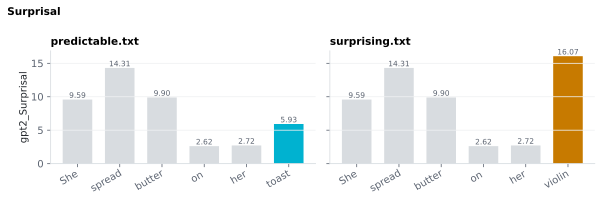

On this page
6.1.10Surprisal
Per-word surprisal — the negative log probability that a language model assigns to a word given everything that came before it in the document, in bits.
6.1.10.1What it is
Per-word surprisal — the negative log probability that a language model assigns to a word given everything that came before it in the document, in bits:
<slug>_Surprisal(wᵢ) = -log₂ P_model(wᵢ | w₁ … wᵢ₋₁) [Hale 2001], [Levy 2008]
<slug> stands for the model's short name — gpt2, llama32_3b,
llama3_8b or llama3_70b — and is the prefix of the column name, so
gpt2_Surprisal is surprisal from GPT-2. Each model you tick writes its own
column, and the name always says which model produced it.
A high-frequency word in a strongly constraining context has low
surprisal (≈ 1–3 bits); a low-frequency or contextually unexpected word
has high surprisal (≈ 8–20 bits). PUNCT rows are NaN, and so is the
document's first word (no left context to condition on).
The metric itself is identical across models — only the estimator
(which language model computes P) changes. Enabling multiple models
writes one namespaced column per model (e.g. gpt2_Surprisal and
llama3_8b_Surprisal side by side), so a single run can directly
compare estimator quality on the same stimulus rather than committing
to one model.
6.1.10.2See it

6.1.10.3In your output
| token | gpt2_Surprisal bits |
|---|---|
| She | |
| spread | 13.94 |
| butter | 11.24 |
| on | 2.868 |
| her | 3.09 |
| violin | 16.95 |
| . |
6.1.10.4MATLAB
% Load the word-level table (one row per word)
T = readtable('word/surprising_features.csv', 'TextType', 'string');
T.Properties.VariableNames % every column in the file
head(T(:, {'token', 'gpt2_Surprisal'}), 10) % this feature's columns (first rows)
% Plot
w = T.upos ~= "PUNCT"; % words only
bar(T.gpt2_Surprisal(w)); xticks(1:nnz(w)); xticklabels(T.token(w)); ylabel('gpt2_Surprisal')
6.1.10.5How it's computed
A causal language model outputs a probability distribution over its
vocabulary at every position. The probability of an actual
continuation token wᵢ given all prior tokens is read off this
distribution; its negative log₂ is the surprisal. When a spaCy token
maps to multiple model subwords (e.g. "unbelievable" →
["un", "bel", "iev", "able"]), their log-probabilities are summed
(equivalent to multiplying probabilities), since they jointly
constitute the word:
P(w) = P(s₁) · P(s₂ | s₁) · ... · P(sₖ | s₁..sₖ₋₁)
so
-log₂ P(w) = Σᵢ -log₂ P(sᵢ | s₁..sᵢ₋₁) (chain rule of probability)
The sum is correct because every model in the roster is autoregressive and conditions each subword on the prior context (including earlier subwords of the same spaCy token). This holds identically whether the backend is GPT-2 or a Llama-3 variant.
6.1.10.6Models
Surprisal is available for every model in the roster
(sensi/extractors/predictability_models.py): GPT-2 (gpt2, free, no
token, CPU-capable baseline) and three gated Llama-3 variants
(llama32_3b, llama3_8b, llama3_70b) that need a HuggingFace token
- accepted license — see LLM access & credentials.
Pick one or several from the GUI's Predictability card's model
multi-select; each selected model is scored once per stimulus and
contributes its own
<slug>_Surprisalcolumn when the Surprisal metric checkbox is on. Better/larger LMs generally produce surprisal estimates that predict reading time and neural responses more tightly than GPT-2's (see EEG rationale below); GPT-2 is the free, always-available baseline.
6.1.10.7In the code
Source: sensi/extractors/predictability.py:add_predictability (the unified,
roster-driven extractor); long-text handling is in
_chunk_slices / _HuggingFaceBackend.score.
This also produces Cloze and
TopMatch from the same forward pass per model —
they're three views of the same per-token prediction. Enabling any of
the three metrics for a given model triggers that model's scoring
pass; cost (and runtime) for that model is the same whether you enable
one or all three of its metrics.
What each word's surprisal is conditioned on
Each word wᵢ is scored against the model's distribution over the
next token conditioned on its own preceding text w₁ … wᵢ₋₁ —
exactly the per-word, growing-prefix recipe the metric is defined by.
Because every roster model has causal (left-only) attention, one
forward pass over a span of subwords already produces a separate
next-token distribution at every position, each conditioned only on
the tokens to its left. So feeding the model w₁ … w_N once is
equivalent to running it N times with prefixes of growing length —
just faster. The per-position distributions are independent: nothing
is pooled across positions.
For the very first word of the document there is no preceding
text to condition on; the extractor stores NaN (not a meaningful
surprisal — those rows are dropped or skipped in regressions).
Short transcripts (fit the model's context window): exact
Every model has a hard architectural context limit
(model.config.max_position_embeddings) — GPT-2's is 1024 subwords;
the Llama-3.2-3B/8B/70B variants are 131072/8192/8192 (see
sensi/extractors/predictability_models.py's native_ctx). When the
transcript tokenises to at or under that limit for the model in use,
the whole document fits in one forward pass and every word's surprisal
is conditioned on its complete natural preceding text. No
approximation.
Long transcripts (exceed the context window): chunked, bounded preceding context
Podcast episodes and audiobook chapters routinely exceed a model's
context window (most visibly GPT-2's 1024-subword limit, or the two
8K-context Llama-3 models) and cannot fit in a single forward pass.
_HuggingFaceBackend.score then walks the input via _chunk_slices
with a stride of window // 2, where window is that model's context
limit. Each forward pass takes one window // 2-subword chunk plus the
immediately preceding window // 2 subwords as left context — exactly
window subwords, the most the model can hold. Only the logits for the
chunk itself are kept; the prefix logits are discarded and re-computed
(with a longer prefix) on the previous pass.
For a transcript twice GPT-2's window (2000 subwords, window = 1024,
chunk = 512):
| Chunk being scored | Forward-pass input | Preceding context the chunk's first subword sees | Vs. ideal full-context |
|---|---|---|---|
| subwords 0 – 511 | input[0:512] |
none (grows naturally within chunk) | identical |
| subwords 512 – 1023 | input[0:1024] |
512 subwords (positions 0 – 511) | identical |
| subwords 1024 – 1535 | input[512:1536] |
512 subwords (positions 512 – 1023) | positions 0 – 511 lost |
| subwords 1536 – 1999 | input[1024:2000] |
512 subwords (positions 1024 – 1535) | positions 0 – 1023 lost |
So every position past the first window is scored with between
window // 2 and window - 1 preceding subwords of context,
depending on where it sits inside its chunk. The earliest subwords
drop out of view at every chunk boundary. This is the unavoidable cost
of a fixed context window on long texts — which subwords to drop is
the only choice.
Scoring inside each chunk remains correct: causal attention guarantees each position's conditional distribution depends only on its own (possibly-truncated) left context.
Per-model context size (optional cap)
Each model row in the Predictability card has a context spinner:
the maximum context (subwords) fed per forward pass, defaulting to the
model's full native window (native_ctx). Lowering it makes the
chunking above kick in sooner — each word conditions on less preceding
text, which is faster and uses less memory on long stimuli, and
lets you fix a common context length across models for comparability.
The cap is clamped to [128, native_ctx] (helper
predictability_models.effective_context); the effective window is
min(cap, model's real max), so it never exceeds what the model can
hold. Stored per model in prefs["predictability"]["context"] (a slug
absent from the map = uncapped = the default).
⚠️ Lowering a model's context changes the emitted
<slug>_Surprisal/_Clozevalues for stimuli longer than the cap (each word sees less history) — by design, and only when you opt in. Leave it at the default to reproduce the full-context values.
Why a window // 2 stride
The stride trades preceding-context budget against forward-pass count:
| Stride | Forward passes for N subwords | Minimum preceding context past the first window |
|---|---|---|
window (no overlap) |
≈ N / window | 0 subwords at every chunk boundary — first position of each chunk has no context, yielding spurious surprisal |
window // 2 (current) |
≈ N / (window / 2) | window // 2 subwords |
| 1 (true sliding window) | ≈ N | window - 1 subwords everywhere |
A 1-subword stride would maximise context but costs roughly window / 2× more passes than the current setting. A causal LM's per-token loss
flattens well before its full context window is consumed, so the
marginal accuracy gain from a smaller stride is small. The window // 2 stride trades up to window // 2 - 1 subwords of additional
context for a window // 2× compute reduction. For GPT-2 this is a
512-subword stride against its 1024-subword window; the same rule
applies to every roster model via its own window.
Step by step
_get_backend/_cached_backendlazily load anAutoModelForCausalLM+AutoTokenizerfor the model's HuggingFace repo id (gpt2for the GPT-2 slug,meta-llama/...for the Llama slugs), cached process-wide perhf_id— a load costs minutes for the larger Llamas, so it happens once per run, shared across the word-level and document-level passes._HuggingFaceBackend.scoretokenises the whole transcript with character offsets, so every subword carries a(char_start, char_end)span, and runs one forward pass (or the chunked sliding window above) to get per-subword log-probabilities and top-1 predictions.map_tokens_to_subwordswalks the spaCy tokens in document order and assigns each subword to exactly ONE token — the first token whose character span it overlaps (a subword straddling a token boundary, e.g."don"over spaCy"do"+"n't", is never charged twice). Per-token log-probabilities are summed and converted to bits (-Σ log_e P / log_e 2) — the joint log-probability of the word; see Math / linguistics.add_predictabilitywrites the result to<slug>_Surprisal(and, if requested,<slug>_Cloze/<slug>_TopMatch) for each selected model.- Rows with
upos == "PUNCT"are masked toNaN. - Scores are memoized per
(hf_id, text/tokens digest): when the word-level and document-level batches process the same stimulus in one run, each model runs its forward pass once and the second pass is a cache hit.
GPT-2 is pinned full-precision on CPU (_FULL_PRECISION_CPU_HF_IDS)
— unlike the Llama models, it never loads 4-bit/fp16 on a GPU, so
gpt2_Surprisal values match the historical GPT-2-only extractor
bit-for-bit regardless of the machine's GPU availability.
Why (design notes)
NaNfor the first word: its first subword has no left context, so the model cannot assign it a probability. Emitting0bits there (the pre-2026-07 behavior) faked a "perfectly predictable" first word;NaNfollows the pipeline-wide no-value convention. Any word whose subwords include position 0 is affected (i.e. exactly the document-initial word).- PUNCT →
NaN: language models do assign probabilities to punctuation, but ERP work on predictability is "usually investigated on content words only", and in Frank 2015 the surprisal effect on the N400 came mostly from content words; punctuation is not a separate item in those analyses. The mask is applied here so downstream code doesn't accidentally include punctuation rows; remove the mask inadd_predictabilityif you specifically want punctuation surprisal. - One backend implementation for every model: GPT-2 loads through
AutoModelForCausalLMexactly like the Llama models (it resolves to theGPT2LMHeadModelclass) — there is exactly one scoring path, used by every roster model, instead of a GPT-2-specific extractor and a separate LLM extractor.
6.1.10.8Library
from transformers import AutoModelForCausalLM, AutoTokenizer
import torch, math
model_id = "gpt2" # or e.g. "meta-llama/Llama-3.2-3B"
tokenizer = AutoTokenizer.from_pretrained(model_id)
model = AutoModelForCausalLM.from_pretrained(model_id)
model.eval()
enc = tokenizer("The cat sat on the mat.", return_tensors="pt")
with torch.no_grad():
logits = model(enc["input_ids"]).logits[0]
log_probs = torch.log_softmax(logits, dim=-1)
# Surprisal of token i is -log2 P(token_i | tokens_0..i-1)
ids = enc["input_ids"][0].tolist()
for i in range(1, len(ids)):
lp = log_probs[i - 1, ids[i]].item()
print(tokenizer.decode([ids[i]]), -lp / math.log(2), "bits")
6.1.10.9EEG rationale
Surprisal is a well-replicated word-level predictor of N400 amplitude in naturalistic reading and listening (Frank 2015, Michaelov 2024) and of reading time (Smith 2013, Goodkind 2018). Surprisal Theory (Hale 2001, Levy 2008) proposes that processing cost is linear in surprisal — equivalently, logarithmic in word probability. Each halving of a word's probability adds one bit to its surprisal and a fixed increment to processing cost, regardless of where on the probability scale the halving occurs. Michaelov 2024 further shows that language-model surprisal explains N400 amplitude better than competing predictors such as cloze probability and distributional semantic similarity.
Heilbron 2022 used GPT-2-derived surprisal specifically to predict
EEG and source-localized MEG responses during naturalistic audiobook
listening, dissociating syntactic, phonemic and semantic prediction
signatures — the gpt2_Surprisal column is the one to use when
reproducing analyses of that kind.
Model quality matters, not just architecture: better LMs produce surprisal estimates that predict reading time more tightly (Goodkind 2018, Wilcox 2020) and predict more variance in fMRI / ECoG responses to language (Schrimpf 2021, Goldstein 2022). Bigger is not automatically better, though. Across GPT-Neo and OPT models, surprisal from the larger transformers (lower perplexity) fit human reading times worse (Oh 2023): they predict named entities and other memorisable sequences better than people do, so their surprisal underestimates human difficulty there. Enabling both a small and a large model on the same run lets you test which estimator fits your own neural data, rather than assuming a larger model is better for it.
6.1.10.10Papers
Surprisal theory:
- Hale 2001 Hale. A probabilistic Earley parser as a psycholinguistic model. NAACL 2001. PDF — introduces surprisal as a cognitive complexity metric.
- Levy 2008 Levy. Expectation-based syntactic comprehension. Cognition. doi:10.1016/j.cognition.2007.05.006 — surprisal theory formalized; linearity prediction.
Surprisal ↔ N400 / reading time:
- Smith 2013 Smith & Levy. The effect of word predictability on reading time is logarithmic. Cognition 128(3), 302–319. doi:10.1016/j.cognition.2013.02.013 — empirical support for the linear-surprisal prediction in reading time.
- Frank 2015 Frank, Otten, Galli, Vigliocco. The ERP response to the amount of information conveyed by words in sentences. Brain & Language 140, 1–11. doi:10.1016/j.bandl.2014.10.006 — N400 amplitude ∝ surprisal in sentence reading.
- Goodkind 2018 Goodkind & Bicknell. Predictive power of word surprisal for reading times is a linear function of language model quality. CMCL 2018, 10–18. ACL Anthology W18-0102 — better LMs give better surprisal estimates for reading time.
- Michaelov 2024 Michaelov, Bardolph, Van Petten, Bergen, Coulson. Strong Prediction: Language Model Surprisal Explains Multiple N400 Effects. Neurobiology of Language 5(1), 107–135. doi:10.1162/nol_a_00105 — direct comparison: LM surprisal explains N400 amplitude better than cloze probability or distributional semantic similarity.
Naturalistic EEG/MEG using GPT-2 surprisal:
- Heilbron 2022 Heilbron, Armeni, Schoffelen, Hagoort, De Lange. A hierarchy of linguistic predictions during natural language comprehension. PNAS 119(32), e2201968119. doi:10.1073/pnas.2201968119 — GPT-2 surprisal regressed against EEG and source-localized MEG during naturalistic audiobook listening; dissociates syntactic, phonemic, and semantic prediction signatures.
Surprisal ↔ LM quality:
-
Wilcox 2020 Wilcox, Gauthier, Hu, Qian, Levy. On the Predictive Power of Neural Language Models for Human Real-Time Comprehension Behavior. CogSci 2020. arXiv:2006.01912 — across architectures, better next-word prediction correlates with stronger prediction of human reading times and eye movements.
-
Oh 2023 Oh & Schuler. Why Does Surprisal From Larger Transformer-Based Language Models Provide a Poorer Fit to Human Reading Times? Transactions of the ACL 11, 336–350. doi:10.1162/tacl_a_00548 — across five GPT-Neo and eight OPT sizes, lower perplexity goes with a poorer fit to reading times; larger models "memorize" sequences such as named entities.
Modern LM ↔ neural data:
- Schrimpf 2021 Schrimpf et al. The neural architecture of language: Integrative modeling converges on predictive processing. PNAS. doi:10.1073/pnas.2105646118
- Caucheteux 2022 Caucheteux & King. Brains and algorithms partially converge in natural language processing. Communications Biology. doi:10.1038/s42003-022-03036-1
- Goldstein 2022 Goldstein et al. Shared computational principles for language processing in humans and deep language models. Nature Neuroscience. doi:10.1038/s41593-022-01026-4